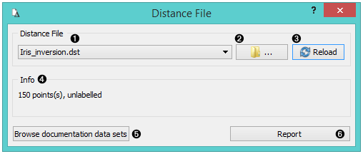
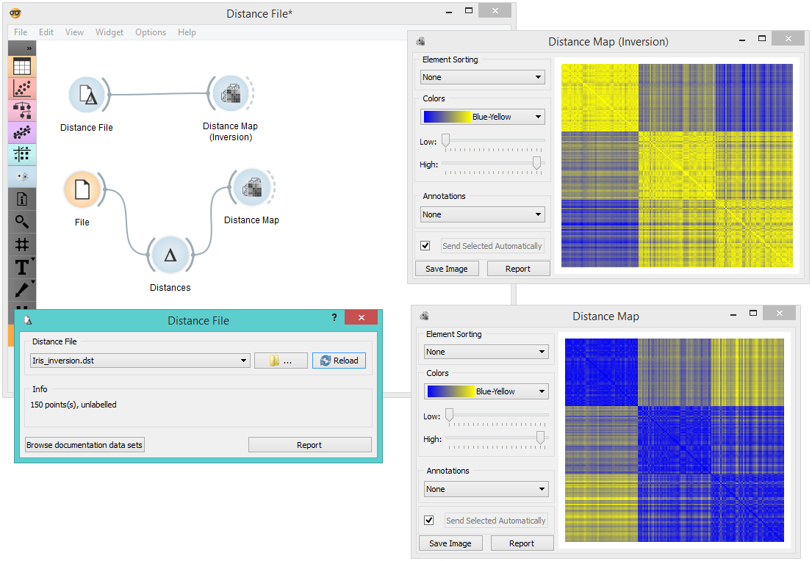

Distance File
Loads an existing distance file.
Outputs
- Distance File: distance matrix

- Choose from a list of previously saved distance files.
- Browse for saved distance files.
- Reload the selected distance file.
- Information about the distance file (number of points, labelled/unlabelled).
- Browse documentation datasets.
- Produce a report.
Example
When you want to use a custom-set distance file that you’ve saved before, open the Distance File widget and select the desired file with the Browse icon. This widget loads the existing distance file. In the snapshot below, we loaded the transformed Iris distance matrix from the Save Distance Matrix example. We displayed the transformed data matrix in the Distance Map widget. We also decided to display a distance map of the original Iris dataset for comparison.
